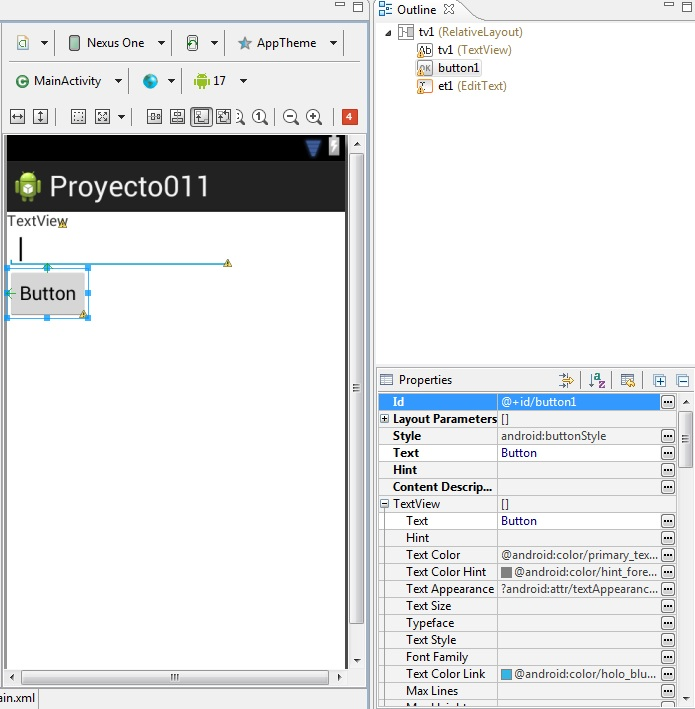
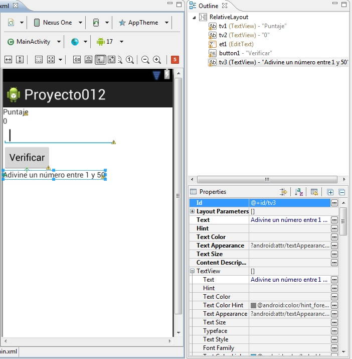

11 - Almacenamiento de datos mediante la clase SharedPreferencesYa se encuentra disponible el nuevo tutorial para aprender android con el nuevo entorno Android Studio propuesto por Google y que remplaza a Eclipse. |
Veremos que la plataforma de Android nos da varias facilidades para el almacenamiento permanente de datos (es decir que los mismos no se borran cuando se apaga la aplicación)
Según el tipo de necesidades utilizaremos alguno de estos métodos:
No será raro que una aplicación utilice más de uno de estos métodos para el almacenamiento de datos.
Cuando tenemos que almacenar una cantidad limitada de datos es adecuado utilizar la clase SharedPreferences. Por ejemplo configuraciones de la aplicación como pueden ser colores de pantalla, nivel actual en un juego, datos iniciales de controles de entrada de dato etc.
Confeccionar un programa que solicite el ingrese del mail de una persona. Guardar el mail ingresado utilizando la clase SharedPreferences. Cada vez que se inicie la aplicación almacenar en el control EditText el último mail ingresado. Disponer un botón para almacenar el mail ingresado y finalizar el programa.
Crearemos un nuevo proyecto llamado proyecto011 y lo almacenaremos en el package name: com.androidya.proyecto011.
La interfaz visual a implementar y los Id de los controles visuales son los siguientes:
Es decir:
Disponemos un TextView y definimos su ID con el nombre tv1
la propiedad Text con "Ingrese el mail:".
Disponemos un EditText y definimos su ID con el nombre et1.
Disponemos un Button y definimos su propiedad Id con el nombre button1
su propiedad Text con el valor confirmar
su propiedad OnClic con el valor ejecutar
El código java es:
package com.javaya.proyecto011;
import android.app.Activity;
import android.content.Context;
import android.content.SharedPreferences;
import android.content.SharedPreferences.Editor;
import android.os.Bundle;
import android.view.Menu;
import android.view.View;
import android.widget.EditText;
public class MainActivity extends Activity {
private EditText et1;
@Override
protected void onCreate(Bundle savedInstanceState) {
super.onCreate(savedInstanceState);
setContentView(R.layout.activity_main);
et1=(EditText)findViewById(R.id.et1);
SharedPreferences prefe=getSharedPreferences("datos",Context.MODE_PRIVATE);
et1.setText(prefe.getString("mail",""));
}
@Override
public boolean onCreateOptionsMenu(Menu menu) {
// Inflate the menu; this adds items to the action bar if it is present.
getMenuInflater().inflate(R.menu.activity_main, menu);
return true;
}
public void ejecutar(View v) {
SharedPreferences preferencias=getSharedPreferences("datos",Context.MODE_PRIVATE);
Editor editor=preferencias.edit();
editor.putString("mail", et1.getText().toString());
editor.commit();
finish();
}
}
Obtenemos la referencia del EditText:
et1=(EditText)findViewById(R.id.et1);
Obtenemos una referencia de un objeto de la clase SharedPreferences a través del método getSharedPreferences. El primer parámetro es el nombre del archivo de preferencias y el segundo la forma de creación del archivo (MODE_PRIVATE indica que solo esta aplicación puede consultar el archivo XML que se crea)
SharedPreferences prefe=getSharedPreferences("datos",Context.MODE_PRIVATE);
Para extraer los datos del archivo de preferencias debemos indicar el nombre a extraer y un valor de retorno si dicho nombre no existe en el archivo de preferencias (en nuestro ejemplo la primera vez que se ejecute nuestro programa como es lógico no existe el archivo de preferencias lo que hace que Android lo cree, si tratamos de extraer el valor de mail retornará el segundo parámetro es decir el String con una cadena vacía:
et1.setText(prefe.getString("mail",""));
Cuando se presiona el botón "Confirmar" lo que hacemos es grabar en el archivo de preferencias el contenido del EditText en una variable llamada "mail":
public void ejecutar(View v) {
SharedPreferences preferencias=getSharedPreferences("datos",Context.MODE_PRIVATE);
Editor editor=preferencias.edit();
editor.putString("mail", et1.getText().toString());
editor.commit();
finish();
}
Debemos crear un objeto de la clase Editor y obtener la referencia del objeto de la clase SharedPreferences que acabamos de crear. Mediante el método putString almacenamos en mail el valor del String cargado en el EditText. Luego debemos llamar al método commit de la clase editor para que el dato quede almacenado en forma permanente en el archivo de preferencias. Esto hace que cuando volvamos a arrancar la aplicación se recupere el último mail ingresado.
Recordemos que el método finish de la clase Activity finaliza la actividad actual (como tenemos una aplicación con una sola actividad finalizará completamente nuestro programa.
Este proyecto lo puede descargar en un zip desde este enlace: proyecto011.zip
El modo de operación del archivo puede ser:
MODE_PRIVATE solo la aplicación puede acceder al archivo de preferencias. MODE_WORLD_READABLE otras aplicaciones pueden consultar el archivo de preferencias MODE_WORLD_WRITEABLE otras aplicaciones pueden consultar y modificar el archivo. MODE_MULTI_PROCESS varios procesos pueden acceder (Requiere Android 2.3)
Cuando guardamos datos en el archivo de preferencias podemos almacenar distintos tipos de datos según el método que llamemos en el momento de grabar:
editor.putInt("edad",3);
editor.putBoolean("activo", true);
editor.putFloat("altura", 2.3f);
Cuando los recuperamos debemos indicar también que tipo de datos extraemos:
int e=prefe.getInt("edad", 0);
boolean acti=prefe.getBoolean("activo", false);
float alt=prefe.getFloat("altura", 0f);
La interfaz visual de la aplicación a desarrollar es:
Este proyecto lo puede descargar en un zip desde este enlace: proyecto012.zip